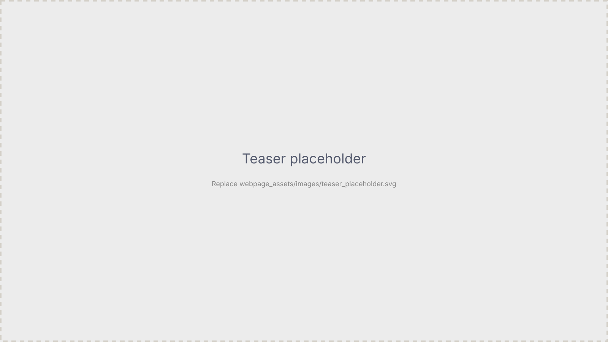
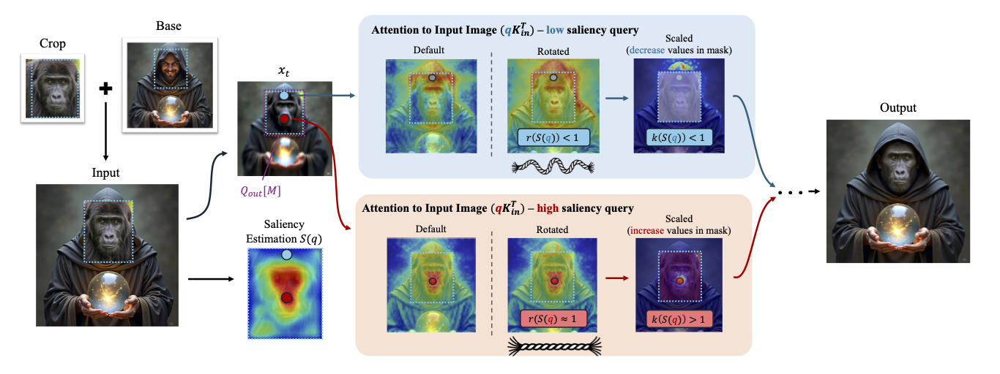

Prox-E
Fine-Grained 3D Shape Editing via Primitive-Based Abstractions

TL;DR: We introduce Prox-E,
a framework for fine-grained 3D shape editing built on
primitive-based abstractions. A fuller summary will appear with the camera-ready page.
Abstract
Fine-grained control over 3D shape remains difficult when edits must respect structure, parts, and local detail. Prox-E studies editing through primitive-based abstractions, enabling localized, interpretable manipulation of shape. The full abstract will be posted with the camera-ready PDF.
Sample Results
Placeholder carousel from the project template; figures will be replaced with Prox-E results.
How does it work?
A detailed method overview, figures, and comparisons will be added here for Prox-E (primitive-based abstractions for fine-grained 3D shape editing). The images below are still from the template project.

Placeholder figure (to be replaced).

Placeholder figure (to be replaced).
Results on Edit3D-bench
Interactive glTF / GLB viewers — drag on each mesh to orbit that mesh independently. Each row shows two editing examples; for each example, meshes are shown in order: input shape, original proxy abstraction, edited proxy abstraction, and final output.
Note: Browsers often block loading these models when the page is opened as a local file (file://).
Run a local server from the project folder instead, for example:
python3 -m http.server 8000
then open http://localhost:8000/.
When the site is served over HTTP or HTTPS (for example GitHub Pages), the viewers load normally.
[Editing prompt placeholder — example A]
[Editing prompt placeholder — example B]
BibTeX
@misc{sella2026proxe,
title = {Prox-E: Fine-Grained {3D} Shape Editing via Primitive-Based Abstractions},
author = {Sella, Etai and Phung, Hao and Amiel, Nitay and Litany, Or and Patashnik, Or and Averbuch-Elor, Hadar},
year = {2026},
note = {arXiv and venue fields to be added}
}
Acknowledgements
Acknowledgements will be updated for the camera-ready version.